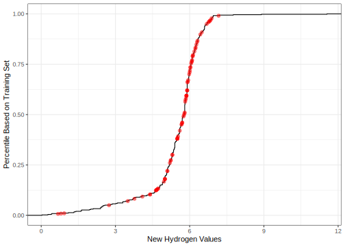

library(modeldata)
data(biomass)
str(biomass)
#> 'data.frame': 536 obs. of 8 variables:
#> $ sample : chr "Akhrot Shell" "Alabama Oak Wood Waste" "Alder" "Alfalfa" ...
#> $ dataset : chr "Training" "Training" "Training" "Training" ...
#> $ carbon : num 49.8 49.5 47.8 45.1 46.8 ...
#> $ hydrogen: num 5.64 5.7 5.8 4.97 5.4 5.75 5.99 5.7 5.5 5.9 ...
#> $ oxygen : num 42.9 41.3 46.2 35.6 40.7 ...
#> $ nitrogen: num 0.41 0.2 0.11 3.3 1 2.04 2.68 1.7 0.8 1.2 ...
#> $ sulfur : num 0 0 0.02 0.16 0.02 0.1 0.2 0.2 0 0.1 ...
#> $ HHV : num 20 19.2 18.3 18.2 18.4 ...
biomass_tr <- biomass[biomass$dataset == "Training",]
biomass_te <- biomass[biomass$dataset == "Testing",]Create your own recipe step function
developer tools
Write a new recipe step for data preprocessing.
Introduction
To use code in this article, you will need to install the following packages: modeldata and tidymodels.
There are many existing recipe steps in packages like recipes, themis, textrecipes, and others. A full list of steps in CRAN packages can be found here. However, you might need to define your own preprocessing operations; this article describes how to do that. If you are looking for good examples of existing steps, we suggest looking at the code for centering or PCA to start.
For check operations (e.g. check_class()), the process is very similar. Notes on this are available at the end of this article.
The general process to follow is to:
Define a step constructor function.
Create the minimal S3 methods for
prep(),bake(), andprint().Optionally add some extra methods to work with other tidymodels packages, such as
tunable()andtidy().
As an example, we will create a step for converting data into percentiles.
A new step definition
Let’s create a step that replaces the value of a variable with its percentile from the training set. The example data we’ll use is from the modeldata package:
To illustrate the transformation with the carbon variable, note the training set distribution of this variable with a vertical line below for the first value of the test set.
library(ggplot2)
theme_set(theme_bw())
ggplot(biomass_tr, aes(x = carbon)) +
geom_histogram(binwidth = 5, col = "blue", fill = "blue", alpha = .5) +
geom_vline(xintercept = biomass_te$carbon[1], lty = 2)
Based on the training set, 42.1% of the data are less than a value of 46.35. There are some applications where it might be advantageous to represent the predictor values as percentiles rather than their original values.
Our new step will do this computation for any numeric variables of interest. We will call this new recipe step step_percentiles(). The code below is designed for illustration and not speed or best practices. We’ve left out a lot of error trapping that we would want in a real implementation.
Note
The step step_percentiles() that will be created on this page, has been implemented in recipes as step_percentile().
Create the function
To start, there is a user-facing function. Let’s call that step_percentiles(). This is just a simple wrapper around a constructor function, which defines the rules for any step object that defines a percentile transformation. We’ll call this constructor step_percentiles_new().
The function step_percentiles() takes the same arguments as your function and simply adds it to a new recipe. The ... signifies the variable selectors that can be used.
step_percentiles <- function(
recipe,
...,
role = NA,
trained = FALSE,
ref_dist = NULL,
options = list(probs = (0:100)/100, names = TRUE),
skip = FALSE,
id = rand_id("percentiles")
) {
add_step(
recipe,
step_percentiles_new(
terms = enquos(...),
trained = trained,
role = role,
ref_dist = ref_dist,
options = options,
skip = skip,
id = id
)
)
}You should always keep the first four arguments (recipe though trained) the same as listed above. Some notes:
- the
roleargument is used when you either 1) create new variables and want their role to be pre-set or 2) replace the existing variables with new values. The latter is what we will be doing and usingrole = NAwill leave the existing role intact. trainedis set by the package when the estimation step has been run. You should default your function definition’s argument toFALSE.skipis a logical. Whenever a recipe is prepped, each step is trained and then baked. However, there are some steps that should not be applied when a call tobake()is used. For example, if a step is applied to the variables with roles of “outcomes”, these data would not be available for new samples.idis a character string that can be used to identify steps in package code.rand_id()will create an ID that has the prefix and a random character sequence.
We can estimate the percentiles of new data points based on the percentiles from the training set with approx(). Our step_percentiles contains a ref_dist object to store these percentiles (pre-computed from the training set in prep()) for later use in bake().
We will use stats::quantile() to compute the grid. However, we might also want to have control over the granularity of this grid, so the options argument will be used to define how that calculation is done. We could use the ellipses (aka ...) so that any options passed to step_percentiles() that are not one of its arguments will then be passed to stats::quantile(). However, we recommend making a separate list object with the options and use these inside the function because ... is already used to define the variable selection.
It is also important to consider if there are any main arguments to the step. For example, for spline-related steps such as step_ns(), users typically want to adjust the argument for the degrees of freedom in the spline (e.g. splines::ns(x, df)). Rather than letting users add df to the options argument:
Allow the important arguments to be main arguments to the step function.
Follow the tidymodels conventions for naming arguments. Whenever possible, avoid jargon and keep common argument names.
There are benefits to following these principles (as shown below).
Initialize a new object
Now, the constructor function can be created.
The function cascade is:
step_percentiles() calls recipes::add_step()
└──> recipes::add_step() calls step_percentiles_new()
└──> step_percentiles_new() calls recipes::step()step() is a general constructor for recipes that mainly makes sure that the resulting step object is a list with an appropriate S3 class structure. Using subclass = "percentiles" will set the class of new objects to "step_percentiles".
step_percentiles_new <-
function(terms, role, trained, ref_dist, options, skip, id) {
step(
subclass = "percentiles",
terms = terms,
role = role,
trained = trained,
ref_dist = ref_dist,
options = options,
skip = skip,
id = id
)
}This constructor function should have no default argument values. Defaults should be set in the user-facing step object.
Create the prep method
You will need to create a new prep() method for your step’s class. To do this, three arguments that the method should have are:
function(x, training, info = NULL)where
xwill be thestep_percentilesobject,trainingwill be a tibble that has the training set data, andinfowill also be a tibble that has information on the current set of data available. This information is updated as each step is evaluated by its specificprep()method so it may not have the variables from the original data. The columns in this tibble arevariable(the variable name),type(currently either “numeric” or “nominal”),role(defining the variable’s role), andsource(either “original” or “derived” depending on where it originated).
You can define other arguments as well.
The first thing that you might want to do in the prep() function is to translate the specification listed in the terms argument to column names in the current data. There is a function called recipes_eval_select() that can be used to obtain this.
Warning
The recipes_eval_select() function is not one you interact with as a typical recipes user, but it is helpful if you develop your own custom recipe steps.
prep.step_percentiles <- function(x, training, info = NULL, ...) {
col_names <- recipes_eval_select(x$terms, training, info)
# TODO finish the rest of the function
}After this function call, it is a good idea to check that the selected columns have the appropriate type (e.g. numeric for this example). See recipes::check_type() to do this for basic types.
Once we have this, we can save the approximation grid. For the grid, we will use a helper function that enables us to run rlang::exec() to splice in any extra arguments contained in the options list to the call to quantile():
get_train_pctl <- function(x, args = NULL) {
res <- rlang::exec("quantile", x = x, !!!args)
# Remove duplicate percentile values
res[!duplicated(res)]
}
# For example:
get_train_pctl(biomass_tr$carbon, list(probs = 0:1))
#> 0% 100%
#> 14.61 97.18
get_train_pctl(biomass_tr$carbon)
#> 0% 25% 50% 75% 100%
#> 14.610 44.715 47.100 49.725 97.180Now, the prep() method can be created:
prep.step_percentiles <- function(x, training, info = NULL, ...) {
col_names <- recipes_eval_select(x$terms, training, info)
check_type(training[, col_names], types = c("double", "integer"))
## We'll use the names later so make sure they are available
if (x$options$names == FALSE) {
rlang::abort("`names` should be set to TRUE")
}
if (!any(names(x$options) == "probs")) {
x$options$probs <- (0:100)/100
} else {
x$options$probs <- sort(unique(x$options$probs))
}
# Compute percentile grid
ref_dist <- purrr::map(training[, col_names], get_train_pctl, args = x$options)
## Use the constructor function to return the updated object.
## Note that `trained` is now set to TRUE
step_percentiles_new(
terms = x$terms,
trained = TRUE,
role = x$role,
ref_dist = ref_dist,
options = x$options,
skip = x$skip,
id = x$id
)
}We suggest favoring rlang::abort() and rlang::warn() over stop() and warning(). The former can be used for better traceback results.
Create the bake method
Remember that the prep() function does not apply the step to the data; it only estimates any required values such as ref_dist. We will need to create a new method for our step_percentiles() class. The minimum arguments for this are
function(object, new_data, ...)where object is the updated step function that has been through the corresponding prep() code and new_data is a tibble of data to be processed.
Here is the code to convert the new data to percentiles. The input data (x below) comes in as a numeric vector and the output is a vector of approximate percentiles:
pctl_by_approx <- function(x, ref) {
# In case duplicates were removed, get the percentiles from
# the names of the reference object
grid <- as.numeric(gsub("%$", "", names(ref)))
approx(x = ref, y = grid, xout = x)$y/100
}We will loop over the variables one by and and apply the transformation. check_new_data() is used to make sure that the variables that are affected in this step are present.
bake.step_percentiles <- function(object, new_data, ...) {
col_names <- names(object$ref_dist)
check_new_data(col_names, object, new_data)
for (col_name in col_names) {
new_data[[col_name]] <- pctl_by_approx(
x = new_data[[col_name]],
ref = object$ref_dist[[col_name]]
)
}
# new_data will be a tibble when passed to this function. It should also
# be a tibble on the way out.
new_data
}
Note
You need to import recipes::prep() and recipes::bake() to create your own step function in a package.
Run the example
Let’s use the example data to make sure that it works:
rec_obj <-
recipe(HHV ~ ., data = biomass_tr) %>%
step_percentiles(ends_with("gen")) %>%
prep(training = biomass_tr)
biomass_te %>% select(ends_with("gen")) %>% slice(1:2)
#> hydrogen oxygen nitrogen
#> 1 5.67 47.20 0.30
#> 2 5.50 48.06 2.85
bake(rec_obj, biomass_te %>% slice(1:2), ends_with("gen"))
#> # A tibble: 2 × 3
#> hydrogen oxygen nitrogen
#> <dbl> <dbl> <dbl>
#> 1 0.45 0.903 0.21
#> 2 0.38 0.922 0.928
# Checking to get approximate result:
mean(biomass_tr$hydrogen <= biomass_te$hydrogen[1])
#> [1] 0.4517544
mean(biomass_tr$oxygen <= biomass_te$oxygen[1])
#> [1] 0.9013158The plot below shows how the original hydrogen percentiles line up with the estimated values:
hydrogen_values <-
bake(rec_obj, biomass_te, hydrogen) %>%
bind_cols(biomass_te %>% select(original = hydrogen))
ggplot(biomass_tr, aes(x = hydrogen)) +
# Plot the empirical distribution function of the
# hydrogen training set values as a black line
stat_ecdf() +
# Overlay the estimated percentiles for the new data:
geom_point(data = hydrogen_values,
aes(x = original, y = hydrogen),
col = "red", alpha = .5, cex = 2) +
labs(x = "New Hydrogen Values", y = "Percentile Based on Training Set")
These line up very nicely!
Custom check operations
The process here is exactly the same as steps; the internal functions have a similar naming convention:
add_check()instead ofadd_step()check()instead ofstep(), and so on.
It is strongly recommended that:
- The operations start with
check_(i.e.check_range()andcheck_range_new()) - The check uses
rlang::abort(paste0(...))when the conditions are not met - The original data are returned (unaltered) by the check when the conditions are satisfied.
Other step methods
There are a few other S3 methods that can be created for your step function. They are not required unless you plan on using your step in the broader tidymodels package set.
A print method
If you don’t add a print method for step_percentiles, it will still print but it will be printed as a list of (potentially large) objects and look a bit ugly. The recipes package contains a helper function called print_step() that should be useful in most cases. We are using it here for the custom print method for step_percentiles. It requires the original terms specification and the column names this specification is evaluated to by prep(). For the former, our step object is structured so that the list object ref_dist has the names of the selected variables:
print.step_percentiles <-
function(x, width = max(20, options()$width - 35), ...) {
title <- "Percentile transformation on "
print_step(
# Names after prep:
tr_obj = names(x$ref_dist),
# Names before prep (could be selectors)
untr_obj = x$terms,
# Has it been prepped?
trained = x$trained,
# What does this step do?
title = title,
# An estimate of how many characters to print on a line:
width = width
)
invisible(x)
}
# Results before `prep()`:
recipe(HHV ~ ., data = biomass_tr) %>%
step_percentiles(ends_with("gen"))
#>
#> ── Recipe ────────────────────────────────────────────────────────────
#>
#> ── Inputs
#> Number of variables by role
#> outcome: 1
#> predictor: 7
#>
#> ── Operations
#> • Percentile transformation on: ends_with("gen")
# Results after `prep()`:
rec_obj
#>
#> ── Recipe ────────────────────────────────────────────────────────────
#>
#> ── Inputs
#> Number of variables by role
#> outcome: 1
#> predictor: 7
#>
#> ── Training information
#> Training data contained 456 data points and no incomplete rows.
#>
#> ── Operations
#> • Percentile transformation on: hydrogen oxygen, ... | TrainedMethods for declaring required packages
Some recipe steps use functions from other packages. When this is the case, the step_*() function should check to see if the package is installed. The function recipes::recipes_pkg_check() will do this. For example:
> recipes::recipes_pkg_check("some_package")
1 package is needed for this step and is not installed. (some_package). Start
a clean R session then run: install.packages("some_package")There is an S3 method that can be used to declare what packages should be loaded when using the step. For a hypothetical step that relies on the hypothetical package, this might look like:
required_pkgs.step_hypothetical <- function(x, ...) {
c("hypothetical", "myrecipespkg")
}In this example, myrecipespkg is the package where the step resides (if it is in a package).
The reason to declare what packages should be loaded is parallel processing. When parallel worker processes are created, there is heterogeneity across technologies regarding which packages are loaded. Multicore methods on macOS and Linux load all of the packages that were loaded in the main R process. However, parallel processing using psock clusters have no additional packages loaded. If the home package for a recipe step is not loaded in the worker processes, the prep() methods cannot be found and an error occurs.
If this S3 method is used for your step, you can rely on this for checking the installation:
recipes::recipes_pkg_check(required_pkgs.step_hypothetical())
#> 2 packages (hypothetical and myrecipespkg) are needed for this step
#> but are not installed.
#> To install run: `install.packages(c("hypothetical", "myrecipespkg"))`If you’d like an example of this in a package, please take a look at the embed or themis package.
A tidy method
The broom::tidy() method is a means to return information about the step in a usable format. For our step, it would be helpful to know the reference values.
When the recipe has been prepped, those data are in the list ref_dist. A small function can be used to reformat that data into a tibble. It is customary to return the main values as value:
format_pctl <- function(x) {
tibble::tibble(
value = unname(x),
percentile = as.numeric(gsub("%$", "", names(x)))
)
}
# For example:
pctl_step_object <- rec_obj$steps[[1]]
pctl_step_object
#> • Percentile transformation on: hydrogen and oxygen, ... | Trained
format_pctl(pctl_step_object$ref_dist[["hydrogen"]])
#> # A tibble: 87 × 2
#> value percentile
#> <dbl> <dbl>
#> 1 0.03 0
#> 2 0.934 1
#> 3 1.60 2
#> 4 2.07 3
#> 5 2.45 4
#> 6 2.74 5
#> 7 3.15 6
#> 8 3.49 7
#> 9 3.71 8
#> 10 3.99 9
#> # ℹ 77 more rowsThe tidy method could return these values for each selected column. Before prep(), missing values can be used as placeholders.
tidy.step_percentiles <- function(x, ...) {
if (is_trained(x)) {
if (length(x$ref_dist) == 0) {
# We need to create consistant output when no variables were selected
res <- tibble(
terms = character(),
value = numeric(),
percentile = numeric()
)
} else {
res <- map_dfr(x$ref_dist, format_pctl, .id = "term")
}
} else {
term_names <- sel2char(x$terms)
res <-
tibble(
terms = term_names,
value = rlang::na_dbl,
percentile = rlang::na_dbl
)
}
# Always return the step id:
res$id <- x$id
res
}
tidy(rec_obj, number = 1)
#> # A tibble: 274 × 4
#> term value percentile id
#> <chr> <dbl> <dbl> <chr>
#> 1 hydrogen 0.03 0 percentiles_Bp5vK
#> 2 hydrogen 0.934 1 percentiles_Bp5vK
#> 3 hydrogen 1.60 2 percentiles_Bp5vK
#> 4 hydrogen 2.07 3 percentiles_Bp5vK
#> 5 hydrogen 2.45 4 percentiles_Bp5vK
#> 6 hydrogen 2.74 5 percentiles_Bp5vK
#> 7 hydrogen 3.15 6 percentiles_Bp5vK
#> 8 hydrogen 3.49 7 percentiles_Bp5vK
#> 9 hydrogen 3.71 8 percentiles_Bp5vK
#> 10 hydrogen 3.99 9 percentiles_Bp5vK
#> # ℹ 264 more rowsMethods for tuning parameters
The tune package can be used to find reasonable values of step arguments by model tuning. There are some S3 methods that are useful to define for your step. The percentile example doesn’t really have any tunable parameters, so we will demonstrate using step_poly(), which returns a polynomial expansion of selected columns. Its function definition has the arguments:
args(step_poly)
#> function (recipe, ..., role = "predictor", trained = FALSE, objects = NULL,
#> degree = 2L, options = list(), keep_original_cols = FALSE,
#> skip = FALSE, id = rand_id("poly"))
#> NULLThe argument degree is tunable.
To work with tune it is helpful (but not required) to use an S3 method called tunable() to define which arguments should be tuned and how values of those arguments should be generated.
tunable() takes the step object as its argument and returns a tibble with columns:
name: The name of the argument.call_info: A list that describes how to call a function that returns a dials parameter object.source: A character string that indicates where the tuning value comes from (i.e., a model, a recipe etc.). Here, it is just"recipe".component: A character string with more information about the source. For recipes, this is just the name of the step (e.g."step_poly").component_id: A character string to indicate where a unique identifier is for the object. For recipes, this is just theidvalue of the step object.
The main piece of information that requires some detail is call_info. This is a list column in the tibble. Each element of the list is a list that describes the package and function that can be used to create a dials parameter object.
For example, for a nearest-neighbors neighbors parameter, this value is just:
info <- list(pkg = "dials", fun = "neighbors")
# FYI: how it is used under-the-hood:
new_param_call <- rlang::call2(.fn = info$fun, .ns = info$pkg)
rlang::eval_tidy(new_param_call)
#> # Nearest Neighbors (quantitative)
#> Range: [1, 10]For step_poly(), a dials object is needed that returns an integer that is the number of new columns to create. It turns out that there are a few different types of tuning parameters related to degree:
> lsf.str("package:dials", pattern = "degree")
degree : function (range = c(1, 3), trans = NULL)
degree_int : function (range = c(1L, 3L), trans = NULL)
prod_degree : function (range = c(1L, 2L), trans = NULL)
spline_degree : function (range = c(3L, 10L), trans = NULL) Looking at the range values, some return doubles and others return integers. For our problem, degree_int() would be a good choice.
For step_poly() the tunable() S3 method could be:
tunable.step_poly <- function (x, ...) {
tibble::tibble(
name = c("degree"),
call_info = list(list(pkg = "dials", fun = "degree_int")),
source = "recipe",
component = "step_poly",
component_id = x$id
)
}Session information
#> ─ Session info ─────────────────────────────────────────────────────
#> version R version 4.4.2 (2024-10-31)
#> language (EN)
#> date 2025-03-24
#> pandoc 3.6.1
#> quarto 1.6.42
#>
#> ─ Packages ─────────────────────────────────────────────────────────
#> package version date (UTC) source
#> broom 1.0.7 2024-09-26 CRAN (R 4.4.1)
#> dials 1.4.0 2025-02-13 CRAN (R 4.4.2)
#> dplyr 1.1.4 2023-11-17 CRAN (R 4.4.0)
#> ggplot2 3.5.1 2024-04-23 CRAN (R 4.4.0)
#> infer 1.0.7 2024-03-25 CRAN (R 4.4.0)
#> modeldata 1.4.0 2024-06-19 CRAN (R 4.4.0)
#> parsnip 1.3.1 2025-03-12 CRAN (R 4.4.1)
#> purrr 1.0.4 2025-02-05 CRAN (R 4.4.1)
#> recipes 1.2.0 2025-03-17 CRAN (R 4.4.1)
#> rlang 1.1.5 2025-01-17 CRAN (R 4.4.2)
#> rsample 1.2.1 2024-03-25 CRAN (R 4.4.0)
#> tibble 3.2.1 2023-03-20 CRAN (R 4.4.0)
#> tidymodels 1.3.0 2025-02-21 CRAN (R 4.4.1)
#> tune 1.3.0 2025-02-21 CRAN (R 4.4.1)
#> workflows 1.2.0 2025-02-19 CRAN (R 4.4.1)
#> yardstick 1.3.2 2025-01-22 CRAN (R 4.4.1)
#>
#> ────────────────────────────────────────────────────────────────────